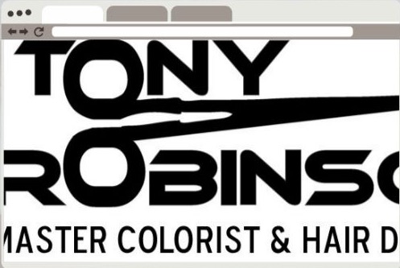

01 — BEFORE & AFTER
A sharper first impression
From a scanned-logo homepage to a confident, bookable landing page.
BEFORE — the existing logo treatment

AFTER — the redesigned homepage concept

ROLEwebsite concept · copy direction · visual identity
FORMATspeculative website redesign
STATUSself-initiated — not commissioned